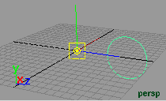
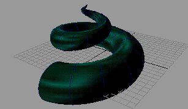

以下示例说明了如何使用动画扫描来创建类似于盘旋的动物触角的模型。
使用动画扫描
- 选择“创建 > NURBS 基本体 > 圆形”(Create > NURBS Primitives > Circle)。
一个圆将显示在场景视图中。
- 沿 Z 轴将圆移动 8 个单位。
- 缩放圆的大小，直到它的半径大约为 3 个单位。
- 将圆旋转 90 度（使其垂直于栅格）。
- 将圆的枢轴移动到原点，这样在动画中它会围绕原点旋转。（另请参见更改枢轴点。）
- 按 Insert 键或 Home 键以显示圆的枢轴点。
- 在“变换属性”(Transform Attributes)条目字段中输入值 0 0 0，或者将枢轴点拖动到原点。
- 再次按 Insert 键或 Home 键退出枢轴点模式。

- 切换到“动画”(Animation)菜单集（按 F4 键）。
- 确保“当前时间指示器”(Current Time Indicator)位于“时间滑块”(Time Slider)的开始位置，并为圆的变换设定一个关键帧。
这是此动画的圆的起始位置。
- 将“当前时间指示器”(Current Time Indicator)移动到播放范围末端。
- 将“旋转 X”(Rotate X)设定为 720，使圆大约旋转两圈。
- 将圆向 Y 轴上方移动大约 10 个单位。
- 将圆缩放为 0。
- 为变换设定关键帧（按 S）。
现在，您已建立了圆的结束状态。
- 按“播放”(Play)查看圆的动画。
- 选择“可视化 > 创建动画扫描”(Visualize > Create Animated Sweep) >
 。
。
此时将显示创建动画扫描选项。
- 确保将“时间范围”(Time Range)设定为“时间滑块”(Time Slider)，并将“按时间”(By Time)值设定为 1。
- 单击“动画扫描”(Anim Sweep)按钮。
